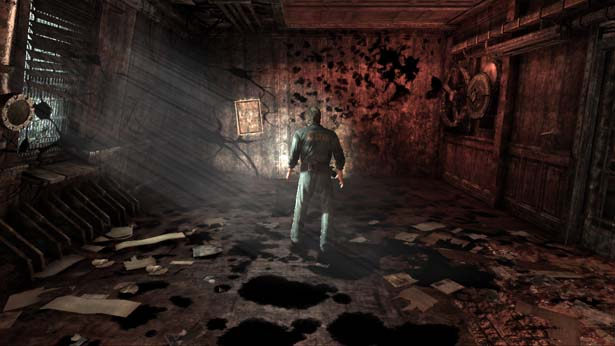

People worry that video game violence directly affects real-life violence. No solid evidence, though there have been a few small studies with varying outcomes. In 2004, Missouri refused to allow convicted criminals access to rated M games such as “Grand Theft Auto” or “Hitman: Contracts”, as they believe it could lead to a relapse or future acts of violence. Arguments that video games have no more effect on violence than television shows, or movies which depict war and serial killers.
6 video games which sparked controversy with their violence
“Death Race” 1976 game in which the player drives a car and runs over gremlins, which scream and become gravestones. The National Safety Council called the game morbid and it was given a spot on “60 minutes” in a segment on violent games. “Mortal Kombat” 1992 original game premier, one of the frontrunning games which led to the creation of the Entertainment Software Rating Board (ESRB). The violence made it very popular, so much so there were multiple reboots, the most recent being “Mortal Kombat 9”. “Doom” 1993, this game popularized first-person shooters, depicting blood and gore with shotguns and chainsaws. What made it the top controversy of it’s time is that the shooters in a 1999 Columbine High School tragedy, in which 12 students and a teacher were killed and 21 others were badly injured when a pair of students placed bombs throughout the school, admitted to being avid “Doom” players. “Grand Theft Auto” 1997 game which allowed the controller to do whatever they liked as criminals. The main issues came with the 2001 “Grand Theft Auto III” which let players kill police officers, hire and kill prostitutes, and many other acts of violence and murder. in 2003, the family of two shooting victims filed the first of several lawsuits against the series, all of which were dismissed. “Silent Hill” 1999 game which included disemboweled and crucified bodies, elevating horror style visuals. “Postal 2” 2003 is a console game which features in many court rulings involving violent games. The player can decapitate innocent people with shovels, urinate on bodies, abuse and kill cats, killing people who cut you in line, and kill people protesting violent video games.